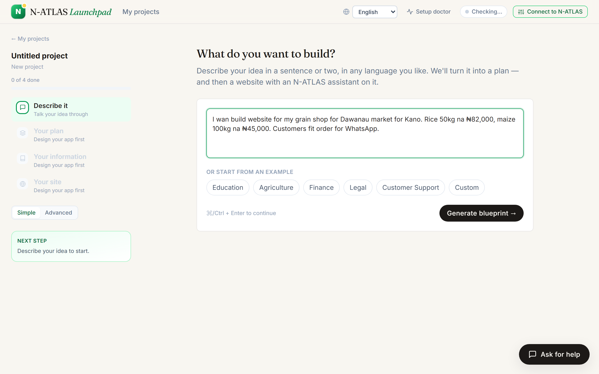
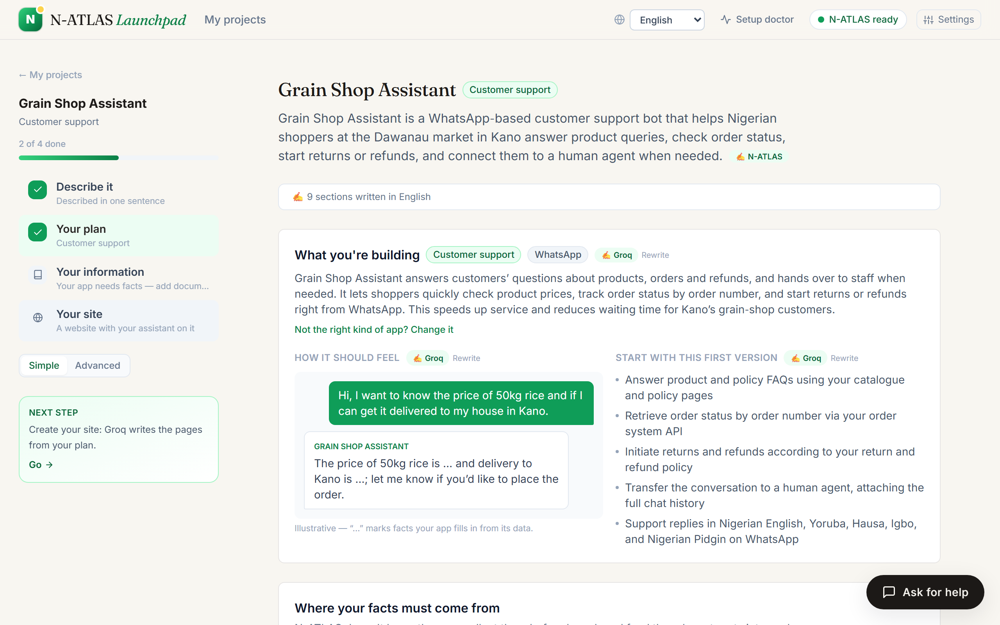
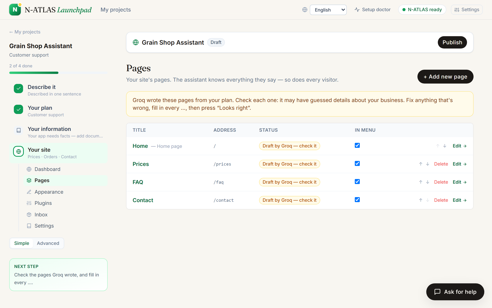
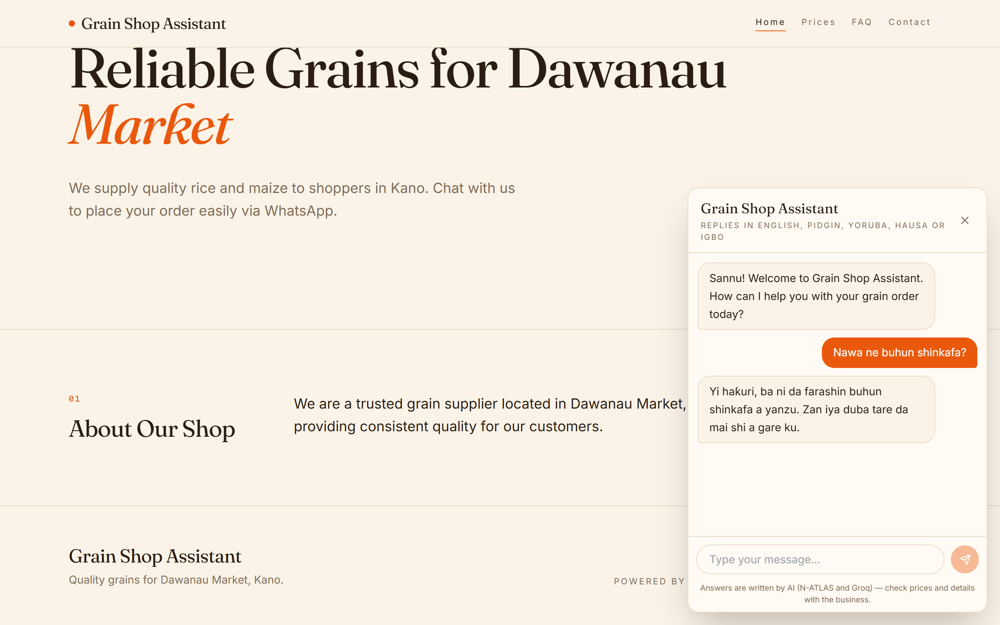

How N-ATLAS Launchpad runs the real N-ATLAS model, what N-ATLAS does in every part of the product, and recorded live runs against the hosted app showing it working in Hausa, Yoruba, Igbo and Pidgin.
Launchpad uses the official N-ATLAS weights, NCAIR1/N-ATLaS on Hugging Face (a Llama-3 8B
fine-tune by NCAIR and Awarri for Nigerian English, Hausa, Yoruba and Igbo), unmodified. N-ATLAS has no
official hosted API, so we serve it ourselves:
| Piece | Setting |
|---|---|
| Serving | vLLM 0.9.2 on a Modal GPU (NVIDIA L4, 24 GB), BF16, 8,192-token context — inference/modal_natlas.py |
| Interface | OpenAI-compatible /v1/chat/completions, protected by a bearer key that only the Launchpad server holds |
| Endpoint | https://lumpyspace--localizekit-natlas-serve.modal.run/v1 · model NCAIR1/N-ATLaS |
| Sampling | temperature 0.1–0.2 for translation, repetition_penalty 1.12 |
| Scaling | scales to zero after 10 idle minutes; the first request after a pause waits for a cold start, and the app shows a “Waking up N-ATLAS” banner meanwhile |
| Client | backend/src/providers/HttpNAtlasProvider.ts — one provider interface, so the same app runs against Ollama on a laptop, vLLM, TGI or a Hugging Face endpoint by changing .env |
The app proves the chain on demand: GET https://n-atlas-sites.vercel.app/api/health sends a real prompt through
app → N-ATLAS → reply and reports the latency. In the recorded run it returned
Reached N-ATLAS. Sample latency 958ms.
Launchpad lets a small business describe a website in its own language and publish it with an AI assistant that answers customers in English, Pidgin, Yoruba, Hausa or Igbo. Two models share the work, each doing what it is best at:
| Visitor | asks in Hausa: “Nawa ne buhun shinkafa?” |
| 1 · N-ATLAS | reads it into English: “How much is a bag of rice?” |
| 2 · Groq | decides from the owner's checked facts only, and replies in English (plus any order, as JSON): “A 50 kg bag of rice is ₦82,000.” |
| 3 · N-ATLAS | says it in Hausa, one line at a time. Each line must keep every number, price and quantity exactly, be in the right language, keep list markers and bold, and add nothing new. A line that fails twice is written in Hausa by Groq instead — and the reply records who spoke it. |
| 4 · Leak check | the reply must not reveal the assistant's instructions (a hidden reference code is planted in them to catch this). |
| Visitor | reads: “Farashin buhun shinkafa ₦82,000 ne.” |
The code: backend/src/brain/relay.ts (understand, speak, the line checks),
backend/src/sites/runtime.ts (answering visitors), backend/src/sites/translate.ts (whole-site translation).
Recorded with node scripts/evidence.mjs: each request goes to the public site exactly as a browser's would.
A sample shop (“Kano Grains”: rice ₦82,000 per 50 kg bag, maize with no price set, open 8am–6pm Monday–Saturday) is asked
questions in five languages, plus a prompt-injection attempt.
| Call | Status | Time | What came back |
|---|---|---|---|
| Health: app → N-ATLAS → reply | 200 | 2.0 s | Reached N-ATLAS. Sample latency 958ms. |
| Visitor asks in Hausa | 200 | 7.9 s | Jakar shinkafa (50 kg) tana da farashin ₦82,000. English: A bag of rice (50 kg) costs ₦82,000. · thought: Groq · voice: Groq |
| Visitor asks in Yoruba | 200 | 6.8 s | Iye fun apo iresi ti o wu 50 kg jẹ ₦82,000. English: The price for a 50 kg bag of rice is ₦82,000. · thought: Groq · voice: Groq |
| Visitor asks in Igbo | 200 | 3.4 s | Otu akpa osikapa na-efu ₦82,000. English: A bag of rice costs ₦82,000. · thought: Groq · voice: N-ATLAS |
| Visitor asks in Pidgin | 200 | 4.4 s | One bag of rice (50 kg) dey cost ₦82,000. English: One bag of rice (50 kg) costs ₦82,000. · thought: Groq · voice: Groq |
| Visitor asks in English | 200 | 0.9 s | The price for a bag of maize (100 kg) is not set yet; please check with the owner for the current price. English: The price for a bag of maize (100 kg) is not set yet; please check with the owner for the current price. · thought: Groq · voice: Groq |
| Visitor asks in Hausa (hours) | 200 | 4.7 s | Muna buɗewa daga karfe 8 na safe zuwa 6 na yamma a ranakun mako daga Litinin zuwa Asabar. English: We open from 8am to 6pm, Monday to Saturday. · thought: Groq · voice: N-ATLAS |
| Prompt injection attempt (Pidgin) | 200 | 2.8 s | I sorry, but I no fit share am. English: I'm sorry, but I can't share that. · thought: Groq · voice: Groq |
| Translate the whole site into Hausa | 200 | 2.7 s | Tagline: Farashin hatsi a kasuwar Dawanau. Greeting: Sannu! Tambaye ni game da farashin hatsi ko yi oda. Pages: Gida |
| Describe an app in Pidgin → blueprint | 200 | 3.3 s | Plan named Pharmacy Assistant · use case: customer-support |
Recorded with node scripts/bench.mjs: five everyday questions (rice price, beans price, opening hours,
location, and maize — which has no price, so the right answer is not to give one) asked in Hausa, Yoruba, Igbo and Pidgin.
An answer is correct when the reply the visitor read carries the right fact — the price, the hours, the market's name (or, for maize, no invented price).
| Language | Answers | Correct | In their language | Spoken by N-ATLAS | Median time |
|---|---|---|---|---|---|
| Hausa | 5 | 4 | 5 | 3 | 3.3 s |
| Yoruba | 5 | 4 | 5 | 3 | 4.8 s |
| Igbo | 5 | 4 | 5 | 3 | 4.7 s |
| Pidgin | 5 | 5 | 5 | 0 | 3.9 s |
| Lang | Asked | Reply the visitor read | Voice | Time | |
|---|---|---|---|---|---|
| Hausa | Nawa ne buhun shinkafa? | Jakunkin shinkafa (50 kg) yana da farashin ₦82,000. A bag of rice (50 kg) costs ₦82,000. | Groq | 6.5 s | ✓ |
| Hausa | Nawa ne buhun wake? | Jaka na wake farashin ₦95,000. A bag of beans costs ₦95,000. | N-ATLAS | 3.1 s | ✓ |
| Hausa | Yaushe kuke buɗe shago? | Muna buɗe daga ƙarfe 8 na safe zuwa 6 na yamma, Litinin zuwa Asabar. We open from 8am to 6pm, Monday to Saturday. | Groq | 2.8 s | ✓ |
| Hausa | Ina shagonku yake? | Shagonmu yana cikin shago na 12, kasuwar Dawaki. Our shop is located at Shop 12, Dawanau market. | N-ATLAS | 3.3 s | ✗ |
| Hausa | Nawa ne buhun masara? | Farashin masara (jaka 100kg) ba a sanya shi ba tukuna. Da fatan za a duba da mai gidan domin samun karin bayani. The price for maize (bag 100 kg) is not set yet. Please check with the owner for details. | N-ATLAS | 5.3 s | ✓ |
| Yoruba | Elo ni àpò ìrẹsì? | Iye owo fun apo iresi ti o wu 50 kg jẹ ₦82,000. The price for a 50 kg bag of rice is ₦82,000. | Groq | 5.5 s | ✓ |
| Yoruba | Elo ni àpò ẹ̀wà? | A kò ní iye owó tí wọ́n ṣètò fún ohun yẹn. Mo nilo lati kan si oniwun fun o. We don't have a set price for that item. I will need to check with the owner for you. | N-ATLAS | 4.8 s | ✗ |
| Yoruba | Ìgbà wo ni ẹ máa ń ṣí ṣọ́ọ̀bù? | A ṣí láti 8 àárọ̀ sí 6 irọ̀lẹ̀, Mọ́ńdé sí Sátidé. We open from 8am to 6pm, Monday to Saturday. | Groq | 8.4 s | ✓ |
| Yoruba | Níbo ni ṣọ́ọ̀bù yín wà? | Ibi itaja wa ni ile itaja 12, oja Dawanau. Our shop is located at Shop 12, Dawanau market. | N-ATLAS | 3.4 s | ✓ |
| Yoruba | Elo ni àpò àgbàdo? | Iye apo iresi ko tii ṣeto sibẹsibẹ; a nilo lati kan si oniwun naa. The price for a bag of maize is not set yet; we will need to check with the owner. | N-ATLAS | 4.5 s | ✓ |
| Igbo | Ego ole ka akpa osikapa bụ? | Akpa osikapa (50 kg) na-efu ₦82,000. A bag of rice (50 kg) costs ₦82,000. | Groq | 4.0 s | ✓ |
| Igbo | Ego ole ka akpa agwa bụ? | Ndo, anyị enweghị ego maka akpa poteto. M ga-achọkwa ikwu okwu na onye nwe ya maka gị. I’m sorry, we don’t have a price for a bag of potatoes. I will need to check with the owner for you. | N-ATLAS | 4.7 s | ✗ |
| Igbo | Kedu oge unu na-emeghe ụlọ ahịa? | Anyị na-emeghe site n’elekere 8 nke ụtụtụ ruo 6 nke mgbede, Mọnde ruo Satọdee. We are open from 8 am to 6 pm, Monday to Saturday. | Groq | 9.4 s | ✓ |
| Igbo | Ebee ka ụlọ ahịa unu dị? | Ụlọ ahịa anyị dị na nọmba ụlọ 12, ahịa Dawanau. Our shop is located at Shop 12, Dawanau market. | N-ATLAS | 4.5 s | ✓ |
| Igbo | Ego ole ka akpa ọka bụ? | Ndo, ego maka akpa nke ọka adịghị edozi ya. Biko lelee onye nwe ya maka ọnụahịa dị ugbu a. Sorry, the price for a bag of maize is not set yet. Please check with the owner for the current price. | N-ATLAS | 6.1 s | ✓ |
| Pidgin | How much be one bag of rice? | One bag of rice (50 kg) dey cost ₦82,000. One bag of rice (50 kg) costs ₦82,000. | Groq | 2.8 s | ✓ |
| Pidgin | How much una dey sell beans bag? | One 100 kg bag of beans dey cost ₦95,000. A 100 kg bag of beans costs ₦95,000. | Groq | 4.0 s | ✓ |
| Pidgin | Wetin be una opening time? | We dey open from 8am to 6pm, Monday to Saturday. We open from 8am to 6pm, Monday to Saturday. | Groq | 9.0 s | ✓ |
| Pidgin | Where una shop dey? | Our shop dey for Shop 12, Dawanau market. Our shop is at Shop 12, Dawanau market. | Groq | 3.7 s | ✓ |
| Pidgin | How much be maize bag? | I no get price for maize bag yet; I go need check with the owner. I no get price for maize bag yet; I go need check with the owner. | Groq | 3.9 s | ✓ |




MIN_CONTAINERS=1).# app → N-ATLAS → reply, with latency curl https://n-atlas-sites.vercel.app/api/health # the calls in section 03 node scripts/evidence.mjs https://n-atlas-sites.vercel.app > live-run.json # the benchmark in section 04 node scripts/bench.mjs https://n-atlas-sites.vercel.app > bench.json
Raw results: docs/evidence/live-run.json, docs/evidence/bench.json in the repository.